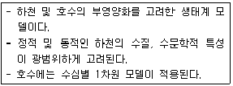
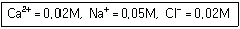
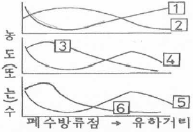
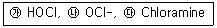
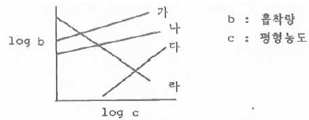
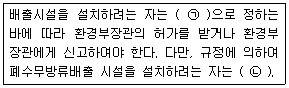

수질환경산업기사 (2018-04-28 기출문제)
1과목: 수질오염개론
1. 해수의 특성에 관한 설명으로 옳지 않은 것은?
- 해수의 밀도는 1.5~1.7g/cm3정도로 수심이 깊을수록 밀도는 감소한다.
- 해수는 강전해질이다.
- 해수의 Mg/Ca비는 3~4정도이다.
- 염분은 적도해역보다 남·북극의 양극해역에서 다소 낮다.
(정답률: 70%)

2. 농도가 A인 기질을 제거하기 위하여 반응조를 설계하고자 한다. 요구되는 기질의 전환율이 90%일 경우 회분식 반응조의 체류시간(hr)은? (단, 기질의 반응은 1차 반응, 반응상수 K＝0.35hr-1)
- 6.6
- 8.6
- 10.6
- 12.6
(정답률: 52%)
3. 다음 설명에 해당하는 하천 모델로 가장 적절한 것은?

- QUAL
- DO-SAG
- WQRRS
- WASP
(정답률: 66%)
4. 소수성 콜로이드 입자가 전기를 띠고 있는 것을 조사하고자 할 때 다음 실험 중 가장 적합한 것은?
- 전해질을 소량 넣고 응집을 조사한다.
- 콜로이드 용액의 삼투압을 조사한다.
- 한외현미경으로 입자의 Brown 운동을 관찰한다.
- 콜로이드 입자에 강한 빛을 조사하여 틴달현상을 조사한다.
(정답률: 68%)
5. 시판되고 있는 액상 표백제는 8W/W(%) 하이포아염소산나트륨(NaOCl)을 함유한다고 한다. 표백제 2886mL 중 NaOCl의 무게(g)는? (단, 표잭제의 비중＝1.1)
- 254
- 264
- 274
- 284
(정답률: 57%)
6. 하천의 수질이 다음과 같을 때 이 물의 이온강도는?

- 0.⑤5
- 0.065
- 0.075
- 0.085
(정답률: 69%)
7. 용존산소(DO)에 대한 설명으로 가장 거리가 먼 것은?
- DO는 염류농도가 높을수록 감소한다.
- DO는 수온이 높을수록 감소한다.
- 조류의 광합성작용은 낮동안 수중의 DO를 증가시킨다.
- 아황산염, 아질산염 등의 무기화합물은 DO를 증가시킨다.
(정답률: 58%)
8. 유기성 오수가 하천에 유입된 후 유하하면서 자정작용이 진행되어 가는 여러 상태를 그래프로 표시하였다. ~ 그래프가 각각 나타내는 것을 순서대로 나열한 것은?

- BOD, DO, NO3-N, NH3-N, 조류, 박테리아
- BOD, DO, NH3-N, NO3-N, 박테리아, 조류
- DO, BOD, NH3-N, NO3-N, 조류, 박테리아
- DO, BOD, NO3-N, NH3-N, 박테리아, 조류
(정답률: 71%)
9. 친수성 콜로이드(Colloid)의 특성에 관한 설명으로 옳지 않은 것은?
- 염에 대하여 큰 영향을 받지 않는다.
- 틴달효과가 현저하게 크고 점도는 분산매 보다 작다.
- 다량의 염을 첨가하여야 응결 침전된다.
- 존재 형태는 유탁(에멀션) 상태이다.
(정답률: 63%)
10. Ca2+가 200mg/L일 때 몇 N농도인가? (단, 원자량 Ca＝40)
- 0.01
- 0.02
- 0.5
- 1.0
(정답률: 68%)
11. 광합성에 영향을 미치는 인자로는 빛의 강도 및 파장, 온도, CO2 농도 등이 있는데, 이들 요소별 변화에 따른 광합성의 변화를 설명한 것 중 틀린 것은?
- 광합성량은 빛의 광포화점에 이를 때까지 빛의 강도에 비례하여 증가한다.
- 광합성 식물은 390~760nm 범위의 가시광선을 광합성에 이용한다.
- 5~25℃ 범위의 온도에서 10℃ 상승시킬 경우 광합성량은 약 2배로 증가된다.
- CO2 농도가 저농도일 때는 빛의 강도에 영향을 받지 않아 광합성량이 감소한다.
(정답률: 64%)
12. 부영양호의 평가에 이용되는 영양상태지수에 대한 설명으로 옳은 것은?
- Shannon과 Brezonik지수는 전도율, 총유기질소, 총인 및 클로로필-a를 수질변수로 선택 하였다.
- Carlson지수는 총유기질소, 클로로필-a 및 총인을 수질변수로 선택하였다.
- Porcella지수는 Carlson지수 값을 일부 이용하였고 부영양호 회복방법의 실시 효과를 분석하는데 이용되는 지수이다.
- Walker지수는 총인을 근거로 만들었고 투명도를 기준으로 계산된 Carlson지수를 보완한 지수로서 조류 외의 투명도에 영향을 주는 인자를 계산에 반영하였다.
(정답률: 53%)
13. 주간에 연못이나 호수 등에 용존산소(DO)의 과포화 상태를 일으키는 미생물은?
- 비루스(Virus)
- 윤충(Rotifer)
- 조류(Algae)
- 박테리아(Bacteria)
(정답률: 82%)
14. 물의 밀도가 가장 큰 값을 나타내는 온도는?
- -10℃
- 0℃
- 4℃
- 10℃
(정답률: 85%)
15. 0.⑤N의 약산인 초산이 16% 해리되어 있다면 이 수용액의 pH는?
- 2.1
- 2.3
- 2.6
- 2.9
(정답률: 64%)
16. 하천 상류에서 BODu＝10mg/L일 때 2m/min 속도로 유하한 20km 하류에서의 BOD(mg/L)는? (단, K1(탈산소 계수, base＝상용대수)＝0.1day-1, 유하도중에 재폭기나 다른 오염물질 유입은 없다.)
- 2
- 3
- 4
- 5
(정답률: 41%)
17. 수인성 전염병의 특징이 아닌 것은?
- 환자가 폭발적으로 발생한다.
- 성별, 연령별 구분없이 발병한다.
- 유행지역과 급수지역이 일치한다.
- 잠복기가 길고 치사율과 2차 감염률이 높다.
(정답률: 75%)
18. 난용성염의 용해이온과의 관계, AmBn(aq) ⇌ mA+(aq)nB-(aq)에서 이온농도와 용해도적 (Ksp)과의 관계 중 과포화상태로 침전이 생기는 상태를 옳게 나타낸 것은?
- [A+]m[B-]n＞Ksp
- [A+]m[B-]n＝Ksp
- [A+]m[B-]n＜Ksp
- [A+]n[B-]m＜Ksp
(정답률: 64%)
19. 우리나라의 수자원 이용현황 중 가장 많은 양이 사용되고 있는 용수는?
- 생활용수
- 공업용수
- 하천유지용수
- 농업용수
(정답률: 83%)
20. 음용수를 염소 소독할 때 살균력이 강한 것부터 순서대로 옳게 배열된 것은? (단, 강함＞약함)

- ㉮＞㉯＞㉰
- ㉯＞㉰＞㉮
- ㉯＞㉮＞㉰
- ㉮＞㉰＞㉯
(정답률: 84%)
2과목: 수질오염방지기술
21. 살수여상에서 연못화(ponding) 현상의 원인으로 가장 거리가 먼 것은?
- 너무 낮은 기질부하율
- 생물막의 과도한 탈리
- 1차 침전지에서 불충분한 고형물 제거
- 너무 작거나 불균일한 여재
(정답률: 48%)
22. 생물학적 처리공정에 대한 설명으로 옳은 것은?
- SBR은 같은 탱크에서 폐수유입, 생물학적 반응, 처리수 배출 등의 순서를 반복하는 오염물 처리공정이다.
- 회전원판법은 혐기성조건을 유지하면서 고형물을 제거하는 처리공정이다.
- 살수여상은 여재를 사용하지 않으면서 고부하의 운전에 용이한 처리공정이다.
- 고효율 활성슬러지공정은 질소, 인 제거를 위한 미생물 부착성장 처리공정이다.
(정답률: 55%)
23. 평균 길이 100m, 평균 폭 80m, 평균 수심 4m인 저수지에 연속적으로 물이 유입되고 있다. 유량이 0.2m3/s이고 저수지의 수위가 일정하게 유지된다면 이 저수지의 평균 수리학적 체류시간(day)은?
- 1.85
- 2.35
- 3.65
- 4.35
(정답률: 60%)
24. 호기성 미생물에 의하여 진행되는 반응은?
- 포도당 → 알코올
- 아세트산 → 메탄
- 아질산염 → 질산염
- 포도당 → 아세트산
(정답률: 72%)
25. 하수 슬러지 농축 방법 중 부상식 농축의 장·단점으로 틀린 것은?
- 잉여슬러지의 농축에 부적합하다.
- 소요면적이 크다.
- 실내에 설치할 경우 부식문제의 유발 우려가 있다.
- 약품 주입 없이 운전이 가능하다.
(정답률: 44%)
26. 혐기성 슬러지 소화조의 운영과 통제를 위한 운전관리지표가 아닌 항목은?
- pH
- 알칼리도
- 잔류염소
- 소화가스의 CO2 함유도
(정답률: 50%)
27. 분뇨처리장에서 발새오디는 악취물질을 제거하는 방법 중 직접적인 탈취효과가 가장 낮은 것은?
- 수세법
- 흡착법
- 촉매산화법
- 중화 및 masking법
(정답률: 59%)
28. 폐수 시료 200mL를 취하여 Jar-test한 결과 Al(SO4)3 300mg/L에서 가장 양호한 결과를 얻었다. 2000m3/day의 폐수를 처리하는데 필요한 Al(SO4)3의 양(kg/day)은?
- 450
- 600
- 750
- 900
(정답률: 57%)
29. 침전지 설계 시 침전시간 2hr, 표면부하율, 30m3/m2·day, 폭과 길이의 비는 1：5로 하고 폭을 10m로 하였을 때 침전지의 크기(m3)는?
- 875
- 1250
- 1750
- 2450
(정답률: 63%)
30. 도금공장에서 발생하는 CN 폐수 30m3를 NaOCl를 사용하여 처리하고자 한다. 폐수 내 CN- 농도가 150mg/L일 때 이론적으로 필요한 NaOCl의 양(kg)은? (단, 2NaCN＋5NaOCl＋H2O → N2＋2CO2＋2NaOH＋5NaCl, 원자량：Na＝23, Cl＝35.5)
- 20.9
- 22.4
- 30.5
- 32.2
(정답률: 34%)
31. 폐수처리장의 설계유량을 산정하기 위한 첨두유량을 구하는 식은?
- 첨두인자×최대유량
- 첨두인자×평균유량
- 첨두인자 / 최대유량
- 첨두인자 / 평균유량
(정답률: 48%)
32. 폐수의 용존성 유기물질을 제거하기 위한 방법으로 가장 거리가 먼 것은?
- 호기성 생물학적 공법
- 혐기성 생물학적 공법
- 모래 여과법
- 활성탄 흡착법
(정답률: 64%)
33. 농도와 흡착량과의 관계를 나타내는 그림 중 고농도에서 흡착량이 커지는 반면에 저농도에서의 흡착량이 현저히 적어지는 것은? (단, Freundlich 등온흡착식으로 Plot한 것임)

- 가
- 나
- 다
- 라
(정답률: 68%)
34. 도시하수에 함유된 영양물질인 질소, 인을 동시에 처리하기 어려운 생물학적 처리공법은?
- AO
- A2O
- 5단계 Bardenpho
- UCT
(정답률: 72%)
35. 생물막법의 미생물학적인 특징이 아닌 것은?
- 정화에 관여하는 미생물의 다양성이 높다.
- 각단에서 우점 미생물이 상이하다.
- 먹이연쇄가 짧다.
- 질산화세균 및 탈질균이 잘 증식된다.
(정답률: 62%)
36. 염소의 살균력에 관한 설명으로 틀린 것은?
- 살균강도는 HOCl가 OCl-의 80매 이상 강하다.
- chloramines은 소독 후 살균력이 약하여 살균작용이 오래 지속되지 않는다.
- 염소의 살균력은 온도가 높고 pH가 낮을 때 강하다.
- 바이러스는 염소에 대한 저항성이 커 일부 생존할 염려가 있다.
(정답률: 60%)
37. 하수소독 시 사용되는 이산화염소(ClO2)에 관한 내용으로 틀린 것은?
- THMs이 생성되지 않음
- 물에 쉽게 녹고 냄새가 적음
- 일광과 접촉할 경우 분해됨
- pH에 의한 살균력의 영향이 큼
(정답률: 48%)
38. 표준활성슬러지법의 일반적 설계범위에 관한 설명으로 옳지 않은 것은?
- HRT는 8~10시간을 표준으로 한다.
- MLSS는 1500~2500mg/L를 표준으로 한다.
- 포기조(표준식)의 유효수심은 4~6m를 표준으로 한다.
- 포기방식은 전면포기식, 선회류식, 미세기포 분사식, 수중 교반식 등이 있다.
(정답률: 58%)
39. 유량이 100m3/day이고 TOC농도가 150mg/L인 폐수를 고정상 탄소흡착 칼럼으로 처리하고자 한다. 유출수의 TOC농도를 10mg/L로 유지하려고 할 때, 탄소 kg당 처리된 유량(L/kg)은? (단, 수리학적 용적부하율＝1.5m3/m3·hr, 탄소밀도＝500kg/m3, 파괴점 농도까지 처리된 유량＝300m3)
- 약 2⑤
- 약 216
- 약 275
- 약 311
(정답률: 33%)
40. 수중에 존재하는 오염물질과 제거방법을 기술한 내용 중 틀린 것은?
- 부유물질－급속여과, 응집침전
- 용해성 유기물질－응집침전, 오존산화
- 용해성 염류－역삼투, 이온교환
- 세균, 바이러스－소독, 급속여과
(정답률: 64%)
3과목: 수질오염공정시험방법
41. 아연을 자외선/가시선분광법으로 분석할 때 어떤 방해 물질 때문에 아스코르빈산을 주입하는가?
- Fe2+
- Cd2+
- Mn2+
- Sr2+
(정답률: 55%)
42. 투명도 판(백색원판)을 사용한 투명도 측정에 관한 설명으로 옳지 않은 것은?
- 투명도판의 색도차는 투명도에 크게 영향을 주므로 표면이 더러울 때에는 깨끗하게 닦아 주어야 한다.
- 강우시에는 정확한 투명도를 얻을 수 없으므로 투명도를 측정하지 않는 것이 좋다.
- 흐름이 있어 줄이 기울어질 경우에는 2kg 정도의 추를 달아서 줄을 세워야 한다.
- 투명도판을 보이지 않는 깊이로 넣은 다음 천천히 끌어 올리면서 보이기 시작한 깊이를 반복해 측정한다.
(정답률: 64%)
43. 기체크로마토그래피 분석에서 전자포획형 검출기(ECD)를 검출기로 사용할 때 선택적으로 검출할 수 있는 물질이 아닌 것은?
- 유기할로겐화합물
- 니트로화합물
- 유기금속화합물
- 유기질소화합물
(정답률: 45%)
44. 물벼룩을 이용한 급성독성시험을 할 때 희석수 비율에 해당되는 것은? (단, 원수 100%기준)
- 35%
- 25%
- 15%
- 5%
(정답률: 65%)
45. 취급 또는 저장하는 동안에 기체 또는 미생물이 침입하지 아니하도록 내용물을 보호하는 용기는?
- 밀봉용기
- 기밀용기
- 밀폐용기
- 완밀용기
(정답률: 69%)
46. 식물성플랑크톤 현미경계수법에 관한 설명으로 틀린 것은?
- 시료의 개체수는 계수면적당 10~40 정도가 되도록 조정한다.
- 시료 농축은 원심분리방법과 자연침전법을 적용한다.
- 정성시험의 목적은 식물성 플랑크톤의 종류를 조사하는 것이다.
- 식물성 플랑크톤의 계수는 정확성과 편리성을 위하여 고배율이 주로 사용된다.
(정답률: 70%)
47. 수질오염공정시험방법에 적용되고 있는 용어에 관한 설명으로 옳은 것은?
- 진공이라 함은 따로 규정이 없는 한 15mmH2O 이하를 말한다.
- 방울수는 정제수 10방울 적하 시 부피가 약 1mL가 되는 것을 뜻한다.
- 항량이란 1시간 더 건조하거나 또는 강열할 때 전후 차가 g당 0.1mg 이하일 때를 말한다.
- 온수는 60~70℃, 냉수는 15℃ 이하를 말한다.
(정답률: 59%)
48. 순수한 물 200L에 에틸알코올(비중 0.79) 80L를 혼합하였을 때, 이 용액중의 에틸알코올 농도(중량 %)는?
- 약 13
- 약 18
- 약 24
- 약 29
(정답률: 58%)
49. 유기물 함량이 비교적 높지 않고 금속의 수산화물, 산화물, 인산염 및 황화물을 함유하고 있는 시료에 적용되는 전처리 방법은?
- 질산법
- 질산－염산법
- 질산－과염소산법
- 질산－과염소산－불화수소산법
(정답률: 69%)
50. 수질오염공정시험기준상 불소화합물을 측정하기 위한 시험방법이 아닌 것은?
- 원자흡수분광광도법
- 이온크로마토그래피
- 이온전극법
- 자외선/가시선 분광법
(정답률: 53%)
51. 수질오염공정시험기준상 바륨(금속류)을 측정하기 위한 시험방법이 아닌 것은?
- 원자흡수분광광도법
- 자외선/가시선 분광법
- 유도결합플라스마 원자발광분광법
- 유도결합플라스마 질량분석법
(정답률: 53%)
52. 기체크로마토그래피법에 관한 설명으로 틀린 것은?
- 충전물로서 적당한 담체에 정지상 액체를 함침시킨 것을 사용할 경우에는 기체－액체 크로마토그래피법이라 한다.
- 일반적으로 유기화합물에 대한 정상 및 정량 분석에 이용된다.
- 전처리한 시료를 운반가스에 의하여 크로마토 관내에 전개시켜 분리되는 각 성분의 크로마토그램을 이용하여 목적성분을 분석하는 방법이다.
- 운반가스는 시료주입부로부터 검출기를 통한 다음 분리관과 기록부를 거쳐 외부로 방출된다.
(정답률: 51%)
53. 산성 과망간산칼륨법으로 폐수의 COD를 측정하기 위해 시료 100mL를 취해 제조한 과망간산칼륨으로 적정하였더니 11.0mL가 소모되었다. 공시험 적정에 소요된 과망간산칼륨이 0.2mL이었다면 이 폐수의 COD(mg/L)는? (단, 과망간산칼륨 용액의 factor 1.1로 가정, 원자량：K＝39, Mn＝55)
- 약 5.9
- 약 19.6
- 약 21.6
- 약 23.8
(정답률: 34%)
54. 자외선/가시선 분광법 구성장치의 순서를 바르게 나타낸 것은?
- 시료부－광원부－파장선택부－측광부
- 광원부－파장선택부－시료부－측광부
- 광원부－시료원자화부－단색화부－측광부
- 시료부－고주파전원부－검출부－연산처리부
(정답률: 58%)
55. 수로의 구성, 재질, 수로단면의 형상, 기울기 등이 일정하지 않은 개수로에서 부표를 사용하여 유속을 측정한 결과, 수로의 평균 단면적이 3.2m2, 표면 최대유속이 2.4m/s일 때, 이 수로에 흐르는 유량(m3/s)은?
- 약 2.7
- 약 3.6
- 약 4.3
- 약 5.8
(정답률: 48%)
56. 0.25N 다이크롬산칼륨액 조제 방법에 관한 설명으로 틀린 것은? (단, K2Cr2O7 분자량＝294.2)
- 다이크롬산칼륨은 1g분자량이 6g당량에 해당한다.
- 다이크롬산칼륨(표준시약)을 사용하기 전에 103℃에서 2시간 동안 건조한 다음 건조용기(실리카겔)에서 식힌다.
- 건조용기(실리카겔)에서 식힌 다이크롬산칼륨 14.71g을 정밀히 담아 물에 녹여 1000mL로 한다.
- 0.025N 다이크롬산칼륨액은 0.25N 다이크롬산칼륨액 100mL를 정확히 취하여 물을 넣어 정확히 1000mL로 한다.
(정답률: 50%)
57. BOD 실험 시 희석수는 5일 배양 후 DO(mg/L) 감소가 얼마 이하이어야 하는가?
- 0.1
- 0.2
- 0.3
- 0.4
(정답률: 47%)
58. 수로의 폭이 0.5m인 직각 삼각웨어의 수두가 0.25m일 때 유량(m3/min)은? (단, 유량계수＝80)
- 2.0
- 2.5
- 3.0
- 3.5
(정답률: 58%)
59. 냄새 측정 시 냄새역치(TON)를 구하는 산식으로 옳은 것은? (단, A：시료부피(mL), B：무취 정제수 부피(mL))
- 냄새역치＝(A＋B)/A
- 냄새역치＝A/(A＋B)
- 냄새역치＝(A＋B)/B
- 냄새역치＝B/(A＋B)
(정답률: 65%)
60. 수중의 중금속에 대한 정량을 원자흡수분광광도법으로 측정할 경우, 화학적 간섭 현상이 발생되었다면 이 간섭을 피하기 위한 방법이 아닌 것은?
- 목적원소 측정에 방해되는 간섭원소 배제를 위한 간섭원소의 상대원소 첨가
- 은폐제나 킬레이트제의 첨가
- 이온화 전압이 높은 원소를 첨가
- 목적원소의 용매 추출
(정답률: 51%)
4과목: 수질환경관계법규
61. 배출부과금을 부과할 때 고려할 사항이 아닌 것은?
- 수질오염물질의 배출기간
- 배출되는 수질오염물질의 종류
- 배출허용기준 초과 여부
- 배출되는 오염물질농도
(정답률: 48%)
62. 정당한 사유 없이 공공수역에 특정수질유해 물질을 누출·유출하거나 버린 자에게 부가되는 벌칙기준은?
- 2년 이하의 징역 또는 2천만원 이하의 벌금
- 3년 이하의 징역 또는 3천만원 이하의 벌금
- 5년 이하의 징역 또는 5천만원 이하의 벌금
- 7년 이하의 징역 또는 7천만원 이하의 벌금
(정답률: 55%)
63. 환경기술인 등의 교육을 받게 하지 아니한 자에 대한 과태료 처분기준은?
- 과태료 300만원 이하
- 과태료 200만원 이하
- 과태료 100만원 이하
- 과태료 50만원 이하
(정답률: 69%)
64. 다음 ( )안에 알맞은 내용은?

- ㉠ 환경부령, ㉡ 환경부장관의 허가를 받아야 한다.
- ㉠ 대통령령, ㉡ 환경부장관의 허가를 받아야 한다.
- ㉠ 환경부령, ㉡ 환경부장관에게 신고하여야 한다.
- ㉠ 대통령령, ㉡ 환경부장관에게 신고하여야 한다.
(정답률: 72%)
65. 국립환경과학원장이 설치·운영하는 측정망의 종류에 해당하지 않는 것은?
- 생물 측정망
- 공공수역 오염원 측정망
- 퇴적물 측정망
- 비점오염원에서 배출되는 비점오염물질 측정망
(정답률: 51%)
66. 폐수의 처리능력과 처리가능성을 고려하여 수탁하여야 하는 준수사항을 지키지 아니한 폐수처리업자에 대한 벌칙기준은?
- 3년 이하의 징역 또는 3천만원 이하의 벌금
- 2년 이하의 징역 또는 2천만원 이하의 벌금
- 1년 이하의 징역 또는 1천만원 이하의 벌금
- 5백만원 이하의 벌금
(정답률: 35%)
67. 공공폐수처리시설의 관리·운영자가 처리시설의 적정운영 여부를 확인하기 위하여 실시하여야 하는 방류수수질의 검사 주기는? (단, 처리시설은 2000m3/일 미만)
- 매분기 1회 이상
- 매분기 2회 이상
- 월 2회 이상
- 월 1회 이상
(정답률: 52%)
68. 2회 연속 채취 시 남조류 세포수가 50000세포/mL인 경우의 수질오염경보 단계는? (단, 조류경보, 상수원 구간 기준)
- 관심
- 경계
- 조류 대발생
- 해제
(정답률: 61%)
69. 대권역 물환경관리계획의 수립에 포함되어야 하는 사항이 아닌 것은?
- 배출허용기준 설정 계획
- 상수원 및 물 이용현황
- 수질오염 예방 및 저감 대책
- 점오염원, 비점오염원 및 기타수질오염원에서 배출되는 수질오염물질의 양
(정답률: 45%)
70. 폐수처리업의 등록기준 중 폐수재이용업의 기술능력 기준으로 옳은 것은?
- 수질환경산업기사, 화공산업기사 중 1명 이상
- 수질환경산업기사, 대기환경산업기사, 화공산업기사 중 1명 이상
- 수질환경기사, 대기환경기사 중 1명 이상
- 수질환경산업기사, 대기환경기사 중 1명 이상
(정답률: 70%)
71. 초과부과금 산정기준 중 1킬로 그램당 부과금액이 가장 큰 수질오염물질은?
- 6가크롬화합물
- 납 및 그 화합물
- 카드뮴 및 그 화합물
- 유기인화합물
(정답률: 61%)
72. 환경부장관이 측정결과를 전산처리할 수 있는 전산망을 운영하기 위하여 수질원격감시체계 관제센터를 설치·운영하는 곳은?
- 국립환경과학원
- 유역환경청
- 한국환경공단
- 시·도 보건환경연구원
(정답률: 52%)
73. 수질오염방지시설 중 물리적 처리시설에 해당되는 것은?
- 응집시설
- 흡착시설
- 침전물 개량시설
- 중화시설
(정답률: 67%)
74. 폐수처리업 중 폐수재이용업에서 사용하는 폐수운반차량의 도장 색깔로 적절한 것은?
- 황색
- 흰색
- 청색
- 녹색
(정답률: 70%)
75. 다음 중 특정수질유해물질이 아닌 것은?
- 불소와 그 화합물
- 셀레늄과 그 화합물
- 구리와 그 화합물
- 테트라클로로에틸렌
(정답률: 54%)
76. 수질 및 수생태계 환경기준 중 해역인 경우 생태기반 해수수질 기준으로 옳은 것은?(단, V(아주 나쁨) 등급)
- 수질평가 지수값：30이상
- 수질평가 지수값：40이상
- 수질평가 지수값：50이상
- 수질평가 지수값：60이상
(정답률: 55%)
77. 수질 및 수생태계 환경기준 중 하천(사람의 건강 보호 기준)에 대한 항목별 기준값으로 틀린 것은?
- 비소：0.⑤mg/L 이하
- 납：0.⑤mg/L 이하
- 6가 크롬：0.⑤mg/L 이하
- 수은：0.⑤mg/L 이하
(정답률: 69%)
78. 낚시제한구역에서의 제한사항에 관한 내용으로 틀린 것은? (단, 안내판 내용기준)
- 고기를 잡기 위하여 폭발물·배터리·어망 등을 이용하는 행위
- 낚시바늘에 끼워서 사용하지 아니하고 고기를 유인하기 위하여 떡밥·어분 등을 던지는 행위
- 1개의 낚시대에 3개 이상의 낚시 바늘을 사용하는 행위
- 1인당 4대 이상의 낚시대를 사용하는 행위
(정답률: 71%)
79. 초과배출부과금 부과 대상 수질오염물질의 종류가 아닌 것은?
- 아연 및 그 화합물
- 벤젠
- 페놀류
- 트리클로로에틸렌
(정답률: 47%)
80. 물환경보전법에서 사용되는 용어의 정의로 틀린 것은?
- 강우유출수：비점오염원의 수질오염물질이 섞여 유출되는 빗물 또는 눈 녹은 물 등을 말한다.
- 공공수역：하천, 호소, 항만, 연안해역, 그 밖에 공공용으로 사용되는 수역과 이에 접속하여 공공용으로 사용되는 대통령령으로 정하는 수로를 말한다.
- 기타수질오염원：점오염원 및 비점오염원으로 관리되지 아니하는 수질오염물질을 배출하는 시설 또는 장소로서 환경부령으로 정하는 것을 말한다.
- 수질오염물질：수질오염의 요인이 되는 물질로서 환경부령으로 정하는 것을 말한다.
(정답률: 44%)